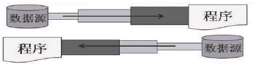
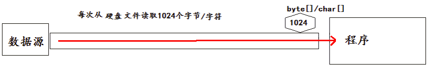

Java 之 IO 流
一、File 类的使用
1. File 类的理解
- File 类的一个对象，代表一个文件或一个文件目录 (俗称：文件夹)。
- File 类声明在 java.io 包下：文件和文件路径的抽象表示形式，与平台无关。
- File 类中涉及到关于文件或文件目录的创建、删除、重命名、修改时间、文件大小等方法，并未涉及到写入或读取文件内容的操作。如果需要读取或写入文件内容，必须使用 IO 流来完成。
- 想要在 Java 程序中表示一个真实存在的文件或目录，那么必须有一个 File 对象，但是 Java 程序中的一个 File 对象，可能没有一个真实存在的文件或目录。
- 后续 File 类的对象常会作为参数传递到流的构造器中，指明读取或写入的 "终点"。
2. File 的实例化
2.1 常用构造器
- File(String filePath)
- File(String parentPath,String childPath)
- File(File parentFile,String childPath)
代码示例：
@Test
public void test1() {
//构造器1
File file1 = new File("hello.txt");
File file2 = new File("E:\\workspace_idea\\JavaSenic\\IO\\hello.txt");
System.out.println(file1);
System.out.println(file2);
//构造器2
File file3 = new File("E:\\workspace_idea\\JavaSenior", "hello.txt");
System.out.println(file3);
//构造器3
File file4 = new File(file3, "hi.txt");
System.out.println(file4);
}
2.2 路径分类
- 相对路径：相较于某个路径下，指明的路径。
- 绝对路径：包含盘符在内的文件或文件目录的路径。
说明：
- IDEA 中：
- 如果使用 JUnit 中的单元测试方法测试，相对路径即为当前 Module 下。
- 如果使用 main() 测试，相对路径即为当前的 Project 下。
- Eclipse 中：
- 不管使用单元测试方法还是使用 main() 测试，相对路径都是当前的 Project 下。
2.3 路径分隔符
-
windows 和 DOS 系统默认使用 “\” 来表示
-
UNIX 和 URL 使用 “/” 来表示
-
Java 程序支持跨平台运行，因此路径分隔符要慎用。
-
为了解决这个隐患，File 类提供了一个常量： public static final String separator。根据操作系统，动态的提供分隔符。
举例：
java
//windows和DOS系统
File file1 = new File("E:\\io\\test.txt");
//UNIX和URL
File file = new File("E:/io/test.txt");
//java提供的常量
File file = new File("E:"+File.separator+"io"+File.separator+"test.txt");
3. File 类的常用方法
3.1 File 类的获取功能
- public String getAbsolutePath()：获取绝对路径
- public String getPath() ：获取路径
- public String getName() ：获取名称
- public String getParent()：获取上层文件目录路径。若无，返回 null
- public long length() ：获取文件长度（即：字节数）。不能获取目录的长度。
- public long lastModified() ：获取最后一次的修改时间，毫秒值
- 如下的两个方法适用于文件目录：
- public String[] list() ：获取指定目录下的所有文件或者文件目录的名称数组
- public File[] listFiles() ：获取指定目录下的所有文件或者文件目录的 File 数组
代码示例：
@Test
public void test2(){
File file1 = new File("hello.txt");
File file2 = new File("d:\\io\\hi.txt");
System.out.println(file1.getAbsolutePath());
System.out.println(file1.getPath());
System.out.println(file1.getName());
System.out.println(file1.getParent());
System.out.println(file1.length());
System.out.println(new Date(file1.lastModified()));
System.out.println();
System.out.println(file2.getAbsolutePath());
System.out.println(file2.getPath());
System.out.println(file2.getName());
System.out.println(file2.getParent());
System.out.println(file2.length());
System.out.println(file2.lastModified());
}
@Test
public void test3(){
File file = new File("D:\\workspace_idea1\\JavaSenior");
String[] list = file.list();
for(String s : list){
System.out.println(s);
}
System.out.println();
File[] files = file.listFiles();
for(File f : files){
System.out.println(f);
}
}
3.2 File 类的重命名功能
- public boolean renameTo(File dest): 把文件重命名为指定的文件路径
- 注意：file1.renameTo(file2) 为例：要想保证返回 true, 需要 file1 在硬盘中是存在的，java且 file2 不能在硬盘中存在。
代码示例：
@Test
public void test4(){
File file1 = new File("hello.txt");
File file2 = new File("D:\\io\\hi.txt");
boolean renameTo = file2.renameTo(file1);
System.out.println(renameTo);
}
3.3 File 类的判断功能
- public boolean isDirectory()：判断是否是文件目录
- public boolean isFile() ：判断是否是文件
- public boolean exists() ：判断是否存在
- public boolean canRead() ：判断是否可读
- public boolean canWrite() ：判断是否可写
- public boolean isHidden() ：判断是否隐藏
代码示例：
@Test
public void test5(){
File file1 = new File("hello.txt");
file1 = new File("hello1.txt");
System.out.println(file1.isDirectory());
System.out.println(file1.isFile());
System.out.println(file1.exists());
System.out.println(file1.canRead());
System.out.println(file1.canWrite());
System.out.println(file1.isHidden());
System.out.println();
File file2 = new File("d:\\io");
file2 = new File("d:\\io1");
System.out.println(file2.isDirectory());
System.out.println(file2.isFile());
System.out.println(file2.exists());
System.out.println(file2.canRead());
System.out.println(file2.canWrite());
System.out.println(file2.isHidden());
}
3.4 Flie 类的创建功能
- 创建硬盘中对应的文件或文件目录
- public boolean createNewFile() ：创建文件。若文件存在，则不创建，返回 false
- public boolean mkdir() ：创建文件目录。如果此文件目录存在，就不创建了。如果此文件目录的上层目录不存在，也不创建。
- public boolean mkdirs() ：创建文件目录。如果此文件目录存在，就不创建了。如果上层文件目录不存在，一并创建
代码示例：
@Test
public void test6() throws IOException {
File file1 = new File("hi.txt");
if(!file1.exists()){
//文件的创建
file1.createNewFile();
System.out.println("创建成功");
}else{//文件存在
file1.delete();
System.out.println("删除成功");
}
}
@Test
public void test7(){
//文件目录的创建
File file1 = new File("d:\\io\\io1\\io3");
boolean mkdir = file1.mkdir();
if(mkdir){
System.out.println("创建成功1");
}
File file2 = new File("d:\\io\\io1\\io4");
boolean mkdir1 = file2.mkdirs();
if(mkdir1){
System.out.println("创建成功2");
}
//要想删除成功，io4文件目录下不能有子目录或文件
File file3 = new File("D:\\io\\io1\\io4");
file3 = new File("D:\\io\\io1");
System.out.println(file3.delete());
}
3.5 File 类的删除功能
- 删除磁盘中的文件或文件目录
- public boolean delete()：删除文件或者文件夹
- 删除注意事项：Java 中的删除不走回收站。
4. 内存解析

5. 小练习
利用 Fie 构造器，new 一个文件目录 file 1）在其中创建多个文件和目录 2）编写方法，实现删除 fle 中指定文件的操作
@Test
public void test1() throws IOException {
File file = new File("E:\\io\\io1\\hello.txt");
//创建一个与file同目录下的另外一个文件，文件名为：haha.txt
File destFile = new File(file.getParent(),"haha.txt");
boolean newFile = destFile.createNewFile();
if(newFile){
System.out.println("创建成功！");
}
}
判断指定目录下是否有后缀名为 jpg 的文件，如果有，就输出该文件名称
public class FindJPGFileTest {
@Test
public void test1(){
File srcFile = new File("d:\\code");
String[] fileNames = srcFile.list();
for(String fileName : fileNames){
if(fileName.endsWith(".jpg")){
System.out.println(fileName);
}
}
}
@Test
public void test2(){
File srcFile = new File("d:\\code");
File[] listFiles = srcFile.listFiles();
for(File file : listFiles){
if(file.getName().endsWith(".jpg")){
System.out.println(file.getAbsolutePath());
}
}
}
/*
* File类提供了两个文件过滤器方法
* public String[] list(FilenameFilter filter)
* public File[] listFiles(FileFilter filter)
*/
@Test
public void test3(){
File srcFile = new File("d:\\code");
File[] subFiles = srcFile.listFiles(new FilenameFilter() {
@Override
public boolean accept(File dir, String name) {
return name.endsWith(".jpg");
}
});
for(File file : subFiles){
System.out.println(file.getAbsolutePath());
}
}
}
遍历指定目录所有文件名称，包括子文件目录中的文件。 拓展 1：并计算指定目录占用空间的大小 拓展 2：删除指定文件目录及其下的所有文件
public class ListFileTest {
public static void main(String[] args) {
// 递归:文件目录
/** 打印出指定目录所有文件名称，包括子文件目录中的文件 */
//1.创建目录对象
File file = new File("E:\\test");
//2.打印子目录
printSubFile(file);
}
/**
* 递归方法遍历所有目录下的文件
*
* @param dir
*/
public static void printSubFile(File dir) {
//打印子目录
File[] files = dir.listFiles();
for (File f : files) {
if (f.isDirectory()) {//如果为文件目录，则递归调用自身
printSubFile(f);
} else {
System.out.println(f.getAbsolutePath());//输出绝对路径
}
}
}
// 拓展1：求指定目录所在空间的大小
// 求任意一个目录的总大小
public long getDirectorySize(File file) {
// file是文件，那么直接返回file.length()
// file是目录，把它的下一级的所有大小加起来就是它的总大小
long size = 0;
if (file.isFile()) {
size += file.length();
} else {
File[] allFiles = file.listFiles();// 获取file的下一级
// 累加all[i]的大小
for (File f : allFiles) {
size += getDirectorySize(f);//f的大小
}
}
return size;
}
/**
* 拓展2：删除指定的目录
*/
public void deleteDirectory(File file) {
// 如果file是文件，直接delete
// 如果file是目录，先把它的下一级干掉，然后删除自己
if (file.isDirectory()) {
File[] allFiles = file.listFiles();
//递归调用删除file下一级
for (File f : allFiles) {
deleteDirectory(f);
}
} else {
//删除文件
file.delete();
}
}
}
二、IO 流概述
1. 简述
- IO 是 Input/Output 的缩写，I/O 技术是非常实用的技术，用于处理设备之间的数据传输。如读 / 写文件，网络通讯等。
- Java 程序中，对于数据的输入输出操作以 “流(stream)” 的方式进行。
- Java.IO 包下提供了各种 “流” 类和接口，用以获取不同种类的数据，并通过标准的方法输入或输出数据。
2. 流的分类
操作数据单位：字节流、字符流
- 对于文本文件 (.txt,.java,.c,.cpp)，使用字符流处理
- 对于非文本文件 (.jpg,.mp3,.mp4,.avi,.doc,.ppt,...)，使用字节流处理
数据的流向：输入流、输出流
- 输入 input: 读取外部数据（磁盘、光盘等存储设备的数据）到程序（内存）中。
- 输出 output: 将程序（内存）数据输出到磁盘、光盘等存储设备中。
流的角色：节点流、处理流
节点流：直接从数据源或目的地读写数据。

处理流：不直接连接到数据源或目的地，而是 “连接” 在已存在的流（节点流或处理流）之上，通过对数据的处理为程序提供更为强大的读写功能。

图示：

3. IO 流的体系分类
3.1 总体分类

红框为抽象基类，蓝框为常用 IO 流
3.2 常用的几个 IO 流结构
| 抽象基类 | 节点流（或文件流） | 缓冲流（处理流的一种） |
|---|---|---|
| InputStream | FileInputStream (read(byte[] buffer)) | BufferedInputStream (read(byte[] buffer)) |
| OutputSteam | FileOutputStream (write(byte[] buffer,0,len) | BufferedOutputStream (write(byte[] buffer,0,len) / flush() |
| Reader | FileReader (read(char[] cbuf)) | BufferedReader (read(char[] cbuf) / readLine()) |
| Writer | FileWriter (write(char[] cbuf,0,len) | BufferedWriter (write(char[] cbuf,0,len) / flush() |
3.3 对抽象基类的说明：
| 抽象基类 | 字节流 | 字符流 |
|---|---|---|
| 输入流 | InputSteam | Reader |
| 输出流 | OutputSteam | Writer |
- 说明：Java 的 lO 流共涉及 40 多个类，实际上非常规则，都是从如下 4 个抽象基类派生的。
- 由这四个类派生出来的子类名称都是以其父类名作为子类名后缀。
3.3.1InputSteam & Reader
- InputStream 和 Reader 是所有输入流的基类。
- InputStream（典型实现：FileInputStream）
- int read()
- int read(byte[] b)
- int read(byte[] b,int off,int len)
- Reader（典型实现：FileReader）
- int read()
- int read(char[] c）
- int read(char[] c,int off,int len）
- 程序中打开的文件 IO 资源不属于内存里的资源，垃圾回收机制无法回收该资源，所以应该显式关闭文件 IO 资源。
- FileInputStream 从文件系统中的某个文件中获得输入字节。FileInputStream 用于读取非文本数据之类的原始字节流。要读取字符流，需要使用 FileReader。
InputSteam：
- int read()
从输入流中读取数据的下一个字节。返回 0 到 255 范围内的 int 字节值。如果因为已经到达流末尾而没有可用的字节，则返回值 - 1。
- int read(byte[] b)
从此输入流中将最多 b.length 个字节的数据读入一个 byte 数组中。如果因为已经到达流末尾而没有可用的字节，则返回值 - 1. 否则以整数形式返回实际读取的字节数。
- int read(byte[] b,int off,int len)
将输入流中最多 len 个数据字节读入 byte 数组。尝试读取 len 个字节，但读取的字节也可能小于该值。以整数形式返回实际读取的字节数。如果因为流位于文件末尾而没有可用的字节，则返回值 - 1。
- public void close throws IOException
关闭此输入流并释放与该流关联的所有系统资源。
Reader：
- int read()
读取单个字符。作为整数读取的字符，范围在 0 到 65535 之间（0x00-0xffff）(2 个字节的 Unicode 码)，如果已到达流的末尾，则返回 - 1。
- int read（char[] cbuf）
将字符读入数组。如果已到达流的末尾，则返回 - 1。否则返回本次读取的字符数。
- int read（char[] cbuf,int off,int len）
将字符读入数组的某一部分。存到数组 cbuf 中，从 off 处开始存储，最多读 len 个字符。如果已到达流的末尾，则返回 - 1。否则返回本次读取的字符数。
- public void close throws IOException
关闭此输入流并释放与该流关联的所有系统资源
3.3.2 OutputSteam & Writer
- OutputStream 和 Writer 也非常相似：
- void write(int b/int c);
- void write(byte[] b/char[] cbuf);
- void write(byte[] b/char[] buff,int off,int len);
- void flush();
- void close(); 需要先刷新，再关闭此流
- 因为字符流直接以字符作为操作单位，所以 Writer 可以用字符串来替换字符数组，即以 String 对象作为参数
- void write(String str);
- void write(String str,int off,int len);
- FileOutputStream 从文件系统中的某个文件中获得输出字节。FileOutputstream 用于写出非文本数据之类的原始字节流。要写出字符流，需要使用 FileWriter
OutputStream:
- void write(int b)
将指定的字节写入此输出流。 write 的常规协定是：向输出流写入一个字节。要写入的字节是参数 b 的八个低位。b 的 24 个高位将被忽略。即写入 0~255 范围的
- void write（byte[] b）
将 b.length 个字节从指定的 byte 数组写入此输出流。write（b）的常规协定是：应该与调用 wite（b,0,b.length）的效果完全相同。
- void write（byte[] b,int off,int len）
将指定 byte 数组中从偏移量 off 开始的 len 个字节写入此输出流。
- public void flush()throws IOException
刷新此输出流并强制写出所有缓冲的输出字节，调用此方法指示应将这些字节立即写入它们预期的目标。
- public void close throws IOException
关闭此输岀流并释放与该流关联的所有系统资源。
Writer:
- void write(int c)
写入单个字符。要写入的字符包含在给定整数值的 16 个低位中，16 高位被忽略。即写入 0 到 65535 之间的 Unicode 码。
- void write(char[] cbuf)
写入字符数组
- void write(char[] cbuf,int off,int len)
写入字符数组的某一部分。从 off 开始，写入 len 个字符
- void write(String str)
写入字符串。
- void write(String str,int off,int len)
写入字符串的某一部分。
- void flush()
刷新该流的缓冲，则立即将它们写入预期目标。
- public void close throws IOException
关闭此输出流并释放与该流关联的所有系统资源
4. 输入、输出标准化过程
4.1 输入过程：
① 创建 File 类的对象，指明读取的数据的来源。（要求此文件一定要存在）
② 创建相应的输入流，将 File 类的对象作为参数，传入流的构造器中
③ 具体的读入过程：创建相应的 byte[] 或 char[]。
④ 关闭流资源
说明：程序中出现的异常需要使用 try-catch-finally 处理。
4.2 输出过程：
① 创建 File 类的对象，指明写出的数据的位置。（不要求此文件一定要存在）
② 创建相应的输出流，将 File 类的对象作为参数，传入流的构造器中
③ 具体的写出过程：write(char[]/byte[] buffer,0,len)
④ 关闭流资源
说明：程序中出现的异常需要使用 try-catch-finally 处理。
三、节点流（文件流）
1. 文件字符流 FileReader 和 FileWriter 的使用
1.1 文件的输入
从文件中读取到内存（程序）中
步骤：
- 建立一个流对象，将已存在的一个文件加载进流 FileReader fr = new FileReader(new File("Test. txt"));
- 创建一个临时存放数据的数组 char[] ch = new char[1024];
- 调用流对象的读取方法将流中的数据读入到数组中。 fr.read(ch);
- 关闭资源。 fr.close();
代码示例：
@Test
public void testFileReader1() {
FileReader fr = null;
try {
//1.File类的实例化
File file = new File("hello.txt");
//2.FileReader流的实例化
fr = new FileReader(file);
//3.读入的操作
//read(char[] cbuf):返回每次读入cbuf数组中的字符的个数。如果达到文件末尾，返回-1
char[] cbuf = new char[5];
int len;
while((len = fr.read(cbuf)) != -1){
String str = new String(cbuf,0,len);
System.out.print(str);
}
} catch (IOException e) {
e.printStackTrace();
} finally {
if(fr != null){
//4.资源的关闭
try {
fr.close();
} catch (IOException e) {
e.printStackTrace();
}
}
}
}
注意点：
- read() 的理解：返回读入的一个字符。如果达到文件末尾，返回 - 1
- 异常的处理：为了保证流资源一定可以执行关闭操作。需要使用 try-catch-finally 处理
- 读入的文件一定要存在，否则就会报 FileNotFoundException。
1.2 文件的输出
从内存（程序）到硬盘文件中
步骤：
- 创建流对象，建立数据存放文件 File Writer fw = new File Writer(new File("Test.txt"))
- 调用流对象的写入方法，将数据写入流 fw.write("HelloWord")
- 关闭流资源，并将流中的数据清空到文件中。 fw.close();
代码示例：
@Test
public void testFileWriter() {
FileWriter fw = null;
try {
//1.提供File类的对象，指明写出到的文件
File file = new File("hello1.txt");
//2.提供FileWriter的对象，用于数据的写出
fw = new FileWriter(file,false);
//3.写出的操作
fw.write("I have a dream!\n");
fw.write("you need to have a dream!");
} catch (IOException e) {
e.printStackTrace();
} finally {
//4.流资源的关闭
if(fw != null){
try {
fw.close();
} catch (IOException e) {
e.printStackTrace();
}
}
}
}
1.3 小练习
实现文本文件的复制操作
@Test
public void testFileReaderFileWriter() {
FileReader fr = null;
FileWriter fw = null;
try {
//1.创建File类的对象，指明读入和写出的文件
File srcFile = new File("hello.txt");
File destFile = new File("hello2.txt");
//不能使用字符流来处理图片等字节数据
// File srcFile = new File("test.jpg");
// File destFile = new File("test1.jpg");
//2.创建输入流和输出流的对象
fr = new FileReader(srcFile);
fw = new FileWriter(destFile);
//3.数据的读入和写出操作
char[] cbuf = new char[5];
int len;//记录每次读入到cbuf数组中的字符的个数
while((len = fr.read(cbuf)) != -1){
//每次写出len个字符
fw.write(cbuf,0,len);
}
} catch (IOException e) {
e.printStackTrace();
} finally {
//4.关闭流资源
try {
if(fw != null)
fw.close();
} catch (IOException e) {
e.printStackTrace();
}
try {
if(fr != null)
fr.close();
} catch (IOException e) {
e.printStackTrace();
}
}
}
2. 文件字节流 FileInputSteam 和 FileOutputSteam 的使用
文件字节流操作与字符流操作类似，只是实例化对象操作和数据类型不同。
代码示例：
//使用字节流FileInputStream处理文本文件，可能出现乱码。
@Test
public void testFileInputStream() {
FileInputStream fis = null;
try {
//1. 造文件
File file = new File("hello.txt");
//2.造流
fis = new FileInputStream(file);
//3.读数据
byte[] buffer = new byte[5];
int len;//记录每次读取的字节的个数
while((len = fis.read(buffer)) != -1){
String str = new String(buffer,0,len);
System.out.print(str);
}
} catch (IOException e) {
e.printStackTrace();
} finally {
if(fis != null){
//4.关闭资源
try {
fis.close();
} catch (IOException e) {
e.printStackTrace();
}
}
}
}
小练习
实现图片文件复制操作
@Test
public void testFileInputOutputStream() {
FileInputStream fis = null;
FileOutputStream fos = null;
try {
//1.创建File对象
File srcFile = new File("test.jpg");
File destFile = new File("test2.jpg");
//2.创建操流
fis = new FileInputStream(srcFile);
fos = new FileOutputStream(destFile);
//3.复制的过程
byte[] buffer = new byte[5];
int len;
while((len = fis.read(buffer)) != -1){
fos.write(buffer,0,len);
}
} catch (IOException e) {
e.printStackTrace();
} finally {
//4.关闭流
if(fos != null){
//
try {
fos.close();
} catch (IOException e) {
e.printStackTrace();
}
}
if(fis != null){
try {
fis.close();
} catch (IOException e) {
e.printStackTrace();
}
}
}
}
3. 注意点
- 定义路径时，可以用 “/” 或“\”。
- 输出操作，对应的 File 可以不存在的。并不会报异常。
- File 对应的硬盘中的文件如果不存在，在输出的过程中，会自动创建此文件。
- File 对应的硬盘中的文件如果存在：
- 如果流使用的构造器是：FileWriter(file,false) / FileWriter(file): 对原有文件的覆盖。
- 如果流使用的构造器是：FileWriter(file,true): 不会对原有文件覆盖，而是在原有文件基础上追加内容。
- 读取文件时，必须保证文件存在，否则会报异常。
- 对于文本文件 (.txt,.java,.c,.cpp)，使用字符流处理
- 对于非文本文件 (.jpg,.mp3,.mp4,.avi,.doc,.ppt,...)，使用字节流处理
四、缓冲流
1. 缓冲流涉及到的类：
- BufferedInputStream
- BufferedOutputStream
- BufferedReader
- BufferedWriter
2. 引入目的：
-
作用：提供流的读取、写入的速度
-
提高读写速度的原因：内部提供了一个缓冲区。默认情况下是 8kb

处理流与节点流的对比图示

3. 使用说明
- 当读取数据时，数据按块读入缓冲区，其后的读操作则直接访问缓冲区。
- 当使用 BufferedInputStream 读取字节文件时，BufferedInputStream 会一次性从文件中读取 8192 个 (8Kb)，存在缓冲区中，直到缓冲区装满了，才重新从文件中读取下一个 8192 个字节数组。
- 向流中写入字节时，不会直接写到文件，先写到缓冲区中直到缓冲区写满，BufferedOutputStream 才会把缓冲区中的数据一次性写到文件里。使用方法 flush() 可以强制将缓冲区的内容全部写入输出流。
- 关闭流的顺序和打开流的顺序相反。只要关闭最外层流即可，关闭最外层流也会相应关闭内层节点流。
- flush() 方法的使用：手动将 buffer 中内容写入文件。
- 如果是带缓冲区的流对象的 close() 方法，不但会关闭流，还会在关闭流之前刷新缓冲区，关闭后不能再写出。
代码示例：
3.1 使用 BufferInputStream 和 BufferOutputStream 实现非文本文件的复制
@Test
public void testBufferedStream(){
BufferedInputStream bis = null;
BufferedOutputStream bos = null;
try {
//1.造文件
File srcFile = new File("test.jpg");
File destFile = new File("test4.jpg");
//2.造流
//2.1造节点流
FileInputStream fis = new FileInputStream(srcFile);
FileOutputStream fos = new FileOutputStream(destFile);
//2.2造缓冲流，可以合并书写
bis = new BufferedInputStream(fis);
bos = new BufferedOutputStream(fos);
//3.文件读取、写出操作
byte[] buffer = new byte[1024];
int len;
while ((len = bis.read(buffer)) != -1){
bos.write(buffer,0,len);
}
} catch (IOException e) {
e.printStackTrace();
} finally {
//4.关闭流
if (bos != null){
try {
bos.close();
} catch (IOException e) {
e.printStackTrace();
}
}
if (bis != null){
try {
bis.close();
} catch (IOException e) {
e.printStackTrace();
}
}
}
}
3.2 使用 BufferedReader 和 BufferedWriter 实现文本文件的复制
@Test
public void testBufferedReaderBufferedWriter(){
BufferedReader br = null;
BufferedWriter bw = null;
try {
//创建文件和相应的流
br = new BufferedReader(new FileReader(new File("dbcp.txt")));
bw = new BufferedWriter(new FileWriter(new File("dbcp1.txt")));
//读写操作
//方式一：使用char[]数组
// char[] cbuf = new char[1024];
// int len;
// while((len = br.read(cbuf)) != -1){
// bw.write(cbuf,0,len);
// // bw.flush();
// }
//方式二：使用String
String data;
while((data = br.readLine()) != null){
//方法一：
// bw.write(data + "\n");//data中不包含换行符
//方法二：
bw.write(data);//data中不包含换行符
bw.newLine();//提供换行的操作
}
} catch (IOException e) {
e.printStackTrace();
} finally {
//关闭资源
if(bw != null){
try {
bw.close();
} catch (IOException e) {
e.printStackTrace();
}
}
if(br != null){
try {
br.close();
} catch (IOException e) {
e.printStackTrace();
}
}
}
}
4. 小练习
4.1 测试缓冲流和节点流文件复制速度
节点流实现复制方法
//指定路径下文件的复制
public void copyFile(String srcPath,String destPath){
FileInputStream fis = null;
FileOutputStream fos = null;
try {
//1.造文件
File srcFile = new File(srcPath);
File destFile = new File(destPath);
//2.造流
fis = new FileInputStream(srcFile);
fos = new FileOutputStream(destFile);
//3.复制的过程
byte[] buffer = new byte[1024];
int len;
while((len = fis.read(buffer)) != -1){
fos.write(buffer,0,len);
}
} catch (IOException e) {
e.printStackTrace();
} finally {
if(fos != null){
//4.关闭流
try {
fos.close();
} catch (IOException e) {
e.printStackTrace();
}
}
if(fis != null){
try {
fis.close();
} catch (IOException e) {
e.printStackTrace();
}
}
}
}
缓冲流实现复制操作
//实现文件复制的方法
public void copyFileWithBuffered(String srcPath,String destPath){
BufferedInputStream bis = null;
BufferedOutputStream bos = null;
try {
//1.造文件
File srcFile = new File(srcPath);
File destFile = new File(destPath);
//2.造流
//2.1 造节点流
FileInputStream fis = new FileInputStream((srcFile));
FileOutputStream fos = new FileOutputStream(destFile);
//2.2 造缓冲流
bis = new BufferedInputStream(fis);
bos = new BufferedOutputStream(fos);
//3.复制的细节：读取、写入
byte[] buffer = new byte[1024];
int len;
while((len = bis.read(buffer)) != -1){
bos.write(buffer,0,len);
}
} catch (IOException e) {
e.printStackTrace();
} finally {
//4.资源关闭
//要求：先关闭外层的流，再关闭内层的流
if(bos != null){
try {
bos.close();
} catch (IOException e) {
e.printStackTrace();
}
}
if(bis != null){
try {
bis.close();
} catch (IOException e) {
e.printStackTrace();
}
}
}
}
测试二者速度
@Test
public void testCopyFileWithBuffered(){
long start = System.currentTimeMillis();
String srcPath = "C:\\Users\\Administrator\\Desktop\\01-视频.avi";
String destPath = "C:\\Users\\Administrator\\Desktop\\03-视频.avi";
copyFileWithBuffered(srcPath,destPath);
long end = System.currentTimeMillis();
System.out.println("复制操作花费的时间为：" + (end - start));//618 - 176
}
4.2 实现图片加密操作
加密操作
- 将图片文件通过字节流读取到程序中
- 将图片的字节流逐一进行 ^ 操作
- 将处理后的图片字节流输出
//图片的加密
@Test
public void test1() {
FileInputStream fis = null;
FileOutputStream fos = null;
try {
fis = new FileInputStream("test.jpg");
fos = new FileOutputStream("testSecret.jpg");
byte[] buffer = new byte[20];
int len;
while ((len = fis.read(buffer)) != -1) {
for (int i = 0; i < len; i++) {
buffer[i] = (byte) (buffer[i] ^ 5);
}
fos.write(buffer, 0, len);
}
} catch (IOException e) {
e.printStackTrace();
} finally {
if (fos != null) {
try {
fos.close();
} catch (IOException e) {
e.printStackTrace();
}
}
if (fis != null) {
try {
fis.close();
} catch (IOException e) {
e.printStackTrace();
}
}
}
}
解密操作
- 将加密后图片文件通过字节流读取到程序中
- 将图片的字节流逐一进行 ^ 操作（原理：A^B^B = A）
- 将处理后的图片字节流输出
//图片的解密
@Test
public void test2() {
FileInputStream fis = null;
FileOutputStream fos = null;
try {
fis = new FileInputStream("testSecret.jpg");
fos = new FileOutputStream("test4.jpg");
byte[] buffer = new byte[20];
int len;
while ((len = fis.read(buffer)) != -1) {
for (int i = 0; i < len; i++) {
buffer[i] = (byte) (buffer[i] ^ 5);
}
fos.write(buffer, 0, len);
}
} catch (IOException e) {
e.printStackTrace();
} finally {
if (fos != null) {
try {
fos.close();
} catch (IOException e) {
e.printStackTrace();
}
}
if (fis != null) {
try {
fis.close();
} catch (IOException e) {
e.printStackTrace();
}
}
}
}
4.3 统计文本字符出现次数
实现思路：
- 遍历文本每一个字符
- 字符出现的次数存在 Map 中
- 把 map 中的数据写入文件
@Test
public void testWordCount() {
FileReader fr = null;
BufferedWriter bw = null;
try {
//1.创建Map集合
Map<Character, Integer> map = new HashMap<Character, Integer>();
//2.遍历每一个字符,每一个字符出现的次数放到map中
fr = new FileReader("dbcp.txt");
int c = 0;
while ((c = fr.read()) != -1) {
//int 还原 char
char ch = (char) c;
// 判断char是否在map中第一次出现
if (map.get(ch) == null) {
map.put(ch, 1);
} else {
map.put(ch, map.get(ch) + 1);
}
}
//3.把map中数据存在文件count.txt
//3.1 创建Writer
bw = new BufferedWriter(new FileWriter("wordcount.txt"));
//3.2 遍历map,再写入数据
Set<Map.Entry<Character, Integer>> entrySet = map.entrySet();
for (Map.Entry<Character, Integer> entry : entrySet) {
switch (entry.getKey()) {
case ' ':
bw.write("空格=" + entry.getValue());
break;
case '\t'://\t表示tab 键字符
bw.write("tab键=" + entry.getValue());
break;
case '\r'://
bw.write("回车=" + entry.getValue());
break;
case '\n'://
bw.write("换行=" + entry.getValue());
break;
default:
bw.write(entry.getKey() + "=" + entry.getValue());
break;
}
bw.newLine();
}
} catch (IOException e) {
e.printStackTrace();
} finally {
//4.关流
if (fr != null) {
try {
fr.close();
} catch (IOException e) {
e.printStackTrace();
}
}
if (bw != null) {
try {
bw.close();
} catch (IOException e) {
e.printStackTrace();
}
}
}
}
五、转换流
1. 简介
- 转换流提供了在字节流和字符流之间的转换
- Java API 提供了两个转换流：
- InputstreamReader：将 Inputstream 转换为 Reader
- OutputStreamWriter：将 Writer 转换为 OutputStream
- 字节流中的数据都是字符时，转成字符流操作更高效。
- 很多时候我们使用转换流来处理文件乱码问题。实现编码和解码的功能。
1.1 InputStreamReader
InputStreamReader 将一个字节的输入流转换为字符的输入流 解码：字节、字节数组 ---> 字符数组、字符串
构造器：
- public InputStreamReader(InputStream in)
- public InputStreamReader(Inputstream in,String charsetName)// 可以指定编码集
1.2 OutputStreamWriter
OutputStreamWriter 将一个字符的输出流转换为字节的输出流 编码：字符数组、字符串 ---> 字节、字节数组
构造器：
- public OutputStreamWriter(OutputStream out)
- public OutputStreamWriter(Outputstream out,String charsetName)// 可以指定编码集
图示：

2. 代码示例：
/**
综合使用InputStreamReader和OutputStreamWriter
*/
@Test
public void test1() {
InputStreamReader isr = null;
OutputStreamWriter osw = null;
try {
//1.造文件、造流
File file1 = new File("dbcp.txt");
File file2 = new File("dbcp_gbk.txt");
FileInputStream fis = new FileInputStream(file1);
FileOutputStream fos = new FileOutputStream(file2);
isr = new InputStreamReader(fis, "utf-8");
osw = new OutputStreamWriter(fos, "gbk");
//2.读写过程
char[] cbuf = new char[20];
int len;
while ((len = isr.read(cbuf)) != -1){
osw.write(cbuf,0,len);
}
} catch (IOException e) {
e.printStackTrace();
} finally {
//3.关流
if (isr != null){
try {
isr.close();
} catch (IOException e) {
e.printStackTrace();
}
}
if (osw != null){
try {
osw.close();
} catch (IOException e) {
e.printStackTrace();
}
}
}
}
说明：文件编码的方式（比如：GBK），决定了解析时使用的字符集（也只能是 GBK）。
3. 编码集
3.1 常见的编码表
- ASCII：美国标准信息交换码。用一个字节的 7 位可以表示。
- ISO8859-1：拉丁码表。欧洲码表用一个字节的 8 位表示。
- GB2312：中国的中文编码表。最多两个字节编码所有字符
- GBK：中国的中文编码表升级，融合了更多的中文文字符号。最多两个字节编码
- Unicode：国际标准码，融合了目前人类使用的所字符。为每个字符分配唯一的字符码。所有的文字都用两个字节来表示。
- UTF-8：变长的编码方式，可用 1-4 个字节来表示一个字符。
说明：
- 面向传输的众多 UTF(UCS Transfer Format) 标准出现了，顾名思义，UTF-8 就是每次 8 个位传输数据，而 UTF-16 就是每次 16 个位。这是为传输而设计的编码，并使编码无国界，这样就可以显示全世界上所有文化的字符了。
- Unicode 只是定义了一个庞大的、全球通用的字符集，并为每个字符规定了唯确定的编号，具体存储成什么样的字节流，取决于字符编码方案。推荐的 Unicode 编码是 UTF-8 和 UTF-16。
UTF-8 变长编码表示

3.2 编码应用
- 编码：字符串 --> 字节数组
- 解码：字节数组 --> 字符串
- 转换流的编码应用
- 可以将字符按指定编码格式存储
- 可以对文本数据按指定编码格式来解读
- 指定编码表的动作由构造器完成
使用要求：
客户端 / 浏览器端 <----> 后台 (java,GO,Python,Node.js,php) <----> 数据库
要求前前后后使用的字符集都要统一：UTF-8.
六、标准输入、输出流
1. 简介
System.in: 标准的输入流，默认从键盘输入
System.out: 标准的输出流，默认从控制台输出
2. 主要方法
System 类的 setIn(InputStream is) 方式重新指定输入的流
System 类的 setOut(PrintStream ps) 方式重新指定输出的流。
3. 使用示例
从键盘输入字符串，要求将读取到的整行字符串转成大写输出。然后继续进行输入操作，
直至当输入 “e” 或者 “exit” 时，退出程序。
设计思路
方法一：使用 Scanner 实现，调用 next() 返回一个字符串
方法二：使用 System.in 实现。System.in ---> 转换流 ---> BufferedReader 的 readLine()
public static void main(String[] args) {
BufferedReader br = null;
try {
InputStreamReader isr = new InputStreamReader(System.in);
br = new BufferedReader(isr);
while (true) {
System.out.println("请输入字符串：");
String data = br.readLine();
if ("e".equalsIgnoreCase(data) || "exit".equalsIgnoreCase(data)) {
System.out.println("程序结束");
break;
}
String upperCase = data.toUpperCase();
System.out.println(upperCase);
}
} catch (IOException e) {
e.printStackTrace();
} finally {
if (br != null) {
try {
br.close();
} catch (IOException e) {
e.printStackTrace();
}
}
}
}
4. 小练习
设计实现 Scanner 类
public class MyInput {
// Read a string from the keyboard
public static String readString() {
BufferedReader br = new BufferedReader(new InputStreamReader(System.in));
// Declare and initialize the string
String string = "";
// Get the string from the keyboard
try {
string = br.readLine();
} catch (IOException ex) {
System.out.println(ex);
}
// Return the string obtained from the keyboard
return string;
}
// Read an int value from the keyboard
public static int readInt() {
return Integer.parseInt(readString());
}
// Read a double value from the keyboard
public static double readDouble() {
return Double.parseDouble(readString());
}
// Read a byte value from the keyboard
public static double readByte() {
return Byte.parseByte(readString());
}
// Read a short value from the keyboard
public static double readShort() {
return Short.parseShort(readString());
}
// Read a long value from the keyboard
public static double readLong() {
return Long.parseLong(readString());
}
// Read a float value from the keyboard
public static double readFloat() {
return Float.parseFloat(readString());
}
}
七、打印流Java
PrintStream 和 PrintWriter 说明：
- 提供了一系列重载的 print() 和 println() 方法，用于多种数据类型的输出
- System.out 返回的是 PrintStream 的实例
@Test
public void test2() {
PrintStream ps = null;
try {
FileOutputStream fos = new FileOutputStream(new File("D:\\IO\\text.txt"));
// 创建打印输出流,设置为自动刷新模式(写入换行符或字节 '\n' 时都会刷新输出缓冲区)
ps = new PrintStream(fos, true);
if (ps != null) {// 把标准输出流(控制台输出)改成文件
System.setOut(ps);
}
for (int i = 0; i <= 255; i++) { // 输出ASCII字符
System.out.print((char) i);
if (i % 50 == 0) { // 每50个数据一行
System.out.println(); // 换行
}
}
} catch (FileNotFoundException e) {
e.printStackTrace();
} finally {
if (ps != null) {
ps.close();
}
}
}
八、数据流
DataInputStream 和 DataOutputStream 作用： 用于读取或写出基本数据类型的变量或字符串
示例代码：
将内存中的字符串、基本数据类型的变量写出到文件中。
@Test
public void test3(){
//1.造对象、造流
DataOutputStream dos = null;
try {
dos = new DataOutputStream(new FileOutputStream("data.txt"));
//数据输出
dos.writeUTF("Bruce");
dos.flush();//刷新操作，将内存的数据写入到文件
dos.writeInt(23);
dos.flush();
dos.writeBoolean(true);
dos.flush();
} catch (IOException e) {
e.printStackTrace();
} finally {
//3.关闭流
if (dos != null){
try {
dos.close();
} catch (IOException e) {
e.printStackTrace();
}
}
}
}
将文件中存储的基本数据类型变量和字符串读取到内存中，保存在变量中。
/*
注意点：读取不同类型的数据的顺序要与当初写入文件时，保存的数据的顺序一致！
*/
@Test
public void test4(){
DataInputStream dis = null;
try {
//1.造对象、造流
dis = new DataInputStream(new FileInputStream("data.txt"));
//2.从文件读入数据
String name = dis.readUTF();
int age = dis.readInt();
boolean isMale = dis.readBoolean();
System.out.println("name:"+name);
System.out.println("age:"+age);
System.out.println("isMale:"+isMale);
} catch (IOException e) {
e.printStackTrace();
} finally {
//3.关闭流
if (dis != null){
try {
dis.close();
} catch (IOException e) {
e.printStackTrace();
}
}
}
}
九、对象流
1. 对象流：
ObjectInputStream 和 ObjectOutputStream
2. 作用：
- ObjectOutputStream: 内存中的对象 ---> 存储中的文件、通过网络传输出去：序列化过程
- ObjectInputStream: 存储中的文件、通过网络接收过来 ---> 内存中的对象：反序列化过程
3. 对象的序列化
- 对象序列化机制允许把内存中的 Java 对象转换成平台无关的二进制流，从而允许把这种二进制流持久地保存在磁盘上，或通过网络将这种二进制流传输到另一个网络节点。// 当其它程序获取了这种二进制流，就可以恢复成原来的 Java 对象。
- 序列化的好处在于可将任何实现了 Serializable 接口的对象转化为字节数据，使其在保存和传输时可被还原。
- 序列化是 RMI(Remote Method Invoke - 远程方法调用) 过程的参数和返回值都必须实现的机制，RMI 是 JavaEE 的基础。因此序列化机制是 JavaEE 平台的基础。
- 如果需要让某个对象支持序列化机制，则必须让对象所属的类及其属性是可序列化的，为了让某个类是可序列化的，该类必须实现如下两个接口之一。否则，会抛出 NotserializableEXception 异常
- Serializable
- Externalizable
- 凡是实现 Serializable 接口的类都有一个表示序列化版本标识符的静态变量：
- private static final long serialVersionUID;
- serialVersionUID 用来表明类的不同版本间的兼容性。简言之，其目的是以序列化对象进行版本控制，有关各版本反序列化时是否兼容
- 如果类没有显示定义这个静态常量，它的值是 Java 运行时环境根据类的内部细节自动生成的。若类的实例变量做了修改，serialVersionUID 可能发生变化。故建议显式声明。
- 简单来说，Java 的序列化机制是通过在运行时判断类的 serialversionUID 来验证版本一致性的。在进行反序列化时，JVM 会把传来的字节流中的 serialversionUID 与本地相应实体类的 serialversionUID 进行比较，如果相同就认为是一致的，可以进行反序列化，否则就会出现序列化版本不一致的异常。(InvalidCastException)
4. 实现序列化的对象所属的类需要满足：
- 需要实现接口：Serializable（标识接口）
- 当前类提供一个全局常量：serialVersionUID（序列版本号）
- 除了当前 Person 类需要实现 Serializable 接口之外，还必须保证其内部所属性也必须是可序列化的。（默认情况下，基本数据类型可序列化）
补充：ObjectOutputStream 和 ObjectInputStream 不能序列化 static 和 transient 修饰的成员变量
5. 对象流的使用
5.1 序列化代码实现
序列化：将对象写入磁盘或进行网络传输
要求被序列化对象必须实现序列化
@Test
public void testObjectOutputStream(){
ObjectOutputStream oos = null;
try {
//1.创建对象，创建流
oos = new ObjectOutputStream(new FileOutputStream("object.dat"));
//2.操作流
oos.writeObject(new String("我爱北京天安门"));
oos.flush();//刷新操作
oos.writeObject(new Person("王铭",23));
oos.flush();
oos.writeObject(new Person("张学良",23,1001,new Account(5000)));
oos.flush();
} catch (IOException e) {
e.printStackTrace();
} finally {
if(oos != null){
//3.关闭流
try {
oos.close();
} catch (IOException e) {
e.printStackTrace();
}
}
}
}
5.2 反序列化代码实现
反序列化：将磁盘的对象数据源读出
@Test
public void testObjectInputStream(){
ObjectInputStream ois = null;
try {
ois = new ObjectInputStream(new FileInputStream("object.dat"));
Object obj = ois.readObject();
String str = (String) obj;
Person p = (Person) ois.readObject();
Person p1 = (Person) ois.readObject();
System.out.println(str);
System.out.println(p);
System.out.println(p1);
} catch (IOException e) {
e.printStackTrace();
} catch (ClassNotFoundException e) {
e.printStackTrace();
} finally {
if(ois != null){
try {
ois.close();
} catch (IOException e) {
e.printStackTrace();
}
}
}
}
十、任意存取文件流
RandomAccessFile 的使用
1. 简介
- RandomAccessFile 直接继承于 java.lang.Object 类，实现了 DataInput 和 DataOutput 接口
- RandomAccessFile 既可以作为一个输入流，又可以作为一个输出流
- RandomAccessFile 类支持 “随机访问” 的方式，程序可以直接跳到文件的任意地方来读、写文件
- 支持只访问文件的部分内容
- 可以向已存在的文件后追加内容
- RandomAccessFile 对象包含一个记录指针，用以标示当前读写处的位置
- RandomaccessFile 类对象可以自由移动记录指针：
- long getFilePointer()：获取文件记录指针的当前位置
- void seek(long pos)：将文件记录指针定位到 pos 位置
构造器
public RandomAccessFile(File file,String mode)
public RandomAccessFile(String name,String mode)
2. 使用说明：
- 如果 RandomAccessFile 作为输出流时，写出到的文件如果不存在，则在执行过程中自动创建。
- 如果写出到的文件存在，则会对原文件内容进行覆盖。（默认情况下，从头覆盖）
- 可以通过相关的操作，实现 RandomAccessFile“插入” 数据的效果。借助 seek(int pos) 方法
- 创建 RandomAccessFile 类实例需要指定一个 mode 参数，该参数指定 RandomAccessFile 的访问模式:
- r：以只读方式打开
- rw：打开以便读取和写入
- rwd：打开以便读取和写入；同步文件内容的更新
- rws：打开以便读取和写入；同步文件内容和元数据的更新
- 如果模式为只读 r, 则不会创建文件，而是会去读取一个已经存在的文件, 读取的文件不存在则会出现异常。如果模式为 rw 读写, 文件不存在则会去创建文件，存在则不会创建。
3. 使用示例
文件的读取和写出操作
@Test
public void test1() {
RandomAccessFile raf1 = null;
RandomAccessFile raf2 = null;
try {
//1.创建对象，创建流
raf1 = new RandomAccessFile(new File("test.jpg"),"r");
raf2 = new RandomAccessFile(new File("test1.jpg"),"rw");
//2.操作流
byte[] buffer = new byte[1024];
int len;Java
while((len = raf1.read(buffer)) != -1){
raf2.write(buffer,0,len);
}
} catch (IOException e) {
e.printStackTrace();
} finally {
//3.关闭流
if(raf1 != null){
try {
raf1.close();
} catch (IOException e) {
e.printStackTrace();
}
}
if(raf2 != null){
try {
raf2.close();
} catch (IOException e) {
e.printStackTrace();
}
}
}
}
使用 RandomAccessFile 实现数据的插入效果
@Test
public void test2(){
RandomAccessFile raf1 = null;
try {
raf1 = new RandomAccessFile(new File("hello.txt"), "rw");
raf1.seek(3);//将指针调到角标为3的位置
// //方式一
// //保存指针3后面的所有数据到StringBuilder中
// StringBuilder builder = new StringBuilder((int) new File("hello.txt").length());
// byte[] buffer = new byte[20];
// int len;
// while ((len = raf1.read(buffer)) != -1){
// builder.append(new String(buffer,0,len));
// }
//方式二
ByteArrayOutputStream baos = new ByteArrayOutputStream();
byte[] buffer = new byte[20];
int len;
while ((len = raf1.read(buffer)) != -1){
baos.write(buffer);
}
//调回指针，写入“xyz”
raf1.seek(3);
raf1.write("xyz".getBytes());
//将StringBuilder中的数据写入到文件中
raf1.write(baos.toString().getBytes());
} catch (IOException e) {
e.printStackTrace();
} finally {
if (raf1 != null){
try {
raf1.close();
} catch (IOException e) {
e.printStackTrace();
}
}
}
}
十一、流的基本应用总结
-
流是用来处理数据的。
-
处理数据时，一定要先明确数据源，与数据目的地数据源可以是文件，可以是键盘数据目的地可以是文件、显示器或者其他设备
-
而流只是在帮助数据进行传输，并对传输的数据进行处理，比如过滤处理、转换处理等
-
除去 RandomAccessFile 类外所有的流都继承于四个基本数据流抽象类 InputSteam、OutputSteam、Reader、Writer
-
不同的操作流对应的后缀均为四个抽象基类中的某一个
-
不同处理流的使用方式都是标准操作：
-
创建文件对象，创建相应的流
- 处理流数据
- 关闭流
- 用 try-catch-finally 处理异常
十二、NIO
Path、Paths、Files 的使用，介绍比较简单，后期会再抽时间详细写有关 NIO 的博客。
1.NIO 的使用说明：
- Java NIO (New IO，Non-Blocking IO) 是从 Java 1.4 版本开始引入的一套新的 IO API，可以替代标准的 Java IO AP。
- NIO 与原来的 IO 同样的作用和目的，但是使用的方式完全不同，NIO 支持面向缓冲区的 (IO 是面向流的)、基于通道的 IO 操作。
- NIO 将以更加高效的方式进行文件的读写操作。
- JDK 7.0 对 NIO 进行了极大的扩展，增强了对文件处理和文件系统特性的支持，称他为 NIO.2。
Java API中提供了两套NIO，一套是针对标准输入输出NIO，另一套就是网络编程NIO
|-----java.nio.channels.Channel
|---- FileChannel：处理本地文件
|---- SocketChannel：TCP网络编程的客户端的Channel
|---- ServerSocketChannel：TCP网络编程的服务器端的Channel
|---- DatagramChannel：UDP网络编程中发送端和接收端的Channel
2.Path 接口 ---JDK 7.0 提供
- 早期的 Java 只提供了一个 File 类来访问文件系统，但 File 类的功能比较有限，所提供的方法性能也不高。而且，大多数方法在出错时仅返回失败，并不会提供异常信息。
- NIO.2 为了弥补这种不足，引入了 Path 接口，代表一个平台无关的平台路径，描述了目录结构中文件的位置。Path 可以看成是 File 类的升级版本，实际引用的资源也可以不存在。
2.1Path 的说明：
Path 替换原有的 File 类。
- 在以前 IO 操作都是这样写的：
- import java.io.File
- File file = new File("index.html");
- 但在 Java7 中，我们可以这样写：
- import java.nio.file.Path;
- import java.nio.file.Paths;
- Path path = Paths.get("index. html");
2.2 Paths 的使用
- Paths 类提供的静态 get() 方法用来获取 Path 对象：
- static Path get(String first， String….more)：用于将多个字符串串连成路径
- static Path get(URI uri)：返回指定 uri 对应的 Path 路径
代码示例
@Test
public void test1(){
Path path1 = Paths.get("hello.txt");//new File(String filepath)
Path path2 = Paths.get("E:\\", "test\\test1\\haha.txt");//new File(String parent,String filename);
Path path3 = Paths.get("E:\\", "test");
System.out.println(path1);
System.out.println(path2);
System.out.println(path3);
}
2.3 常用方法
- String toString() ： 返回调用 Path 对象的字符串表示形式
- boolean startsWith(String path) : 判断是否以 path 路径开始
- boolean endsWith(String path) : 判断是否以 path 路径结束
- boolean isAbsolute() : 判断是否是绝对路径
- Path getParent() ：返回 Path 对象包含整个路径，不包含 Path 对象指定的文件路径
- Path getRoot() ：返回调用 Path 对象的根路径
- Path getFileName() : 返回与调用 Path 对象关联的文件名
- int getNameCount() : 返回 Path 根目录后面元素的数量
- Path getName(int idx) : 返回指定索引位置 idx 的路径名称
- Path toAbsolutePath() : 作为绝对路径返回调用 Path 对象
- Path resolve(Path p) : 合并两个路径，返回合并后的路径对应的 Path 对象
- File toFile(): 将 Path 转化为 File 类的对象
代码示例
@Test
public void test2() {
Path path1 = Paths.get("d:\\", "nio\\nio1\\nio2\\hello.txt");
Path path2 = Paths.get("hello.txt");
// String toString() ： 返回调用 Path 对象的字符串表示形式
System.out.println(path1);
// boolean startsWith(String path) : 判断是否以 path 路径开始
System.out.println(path1.startsWith("d:\\nio"));
// boolean endsWith(String path) : 判断是否以 path 路径结束
System.out.println(path1.endsWith("hello.txt"));
// boolean isAbsolute() : 判断是否是绝对路径
System.out.println(path1.isAbsolute() + "~");
System.out.println(path2.isAbsolute() + "~");
// Path getParent() ：返回Path对象包含整个路径，不包含 Path 对象指定的文件路径
System.out.println(path1.getParent());
System.out.println(path2.getParent());
// Path getRoot() ：返回调用 Path 对象的根路径
System.out.println(path1.getRoot());
System.out.println(path2.getRoot());
// Path getFileName() : 返回与调用 Path 对象关联的文件名
System.out.println(path1.getFileName() + "~");
System.out.println(path2.getFileName() + "~");
// int getNameCount() : 返回Path 根目录后面元素的数量
// Path getName(int idx) : 返回指定索引位置 idx 的路径名称
for (int i = 0; i < path1.getNameCount(); i++) {
System.out.println(path1.getName(i) + "*****");
}
// Path toAbsolutePath() : 作为绝对路径返回调用 Path 对象
System.out.println(path1.toAbsolutePath());
System.out.println(path2.toAbsolutePath());
// Path resolve(Path p) :合并两个路径，返回合并后的路径对应的Path对象
Path path3 = Paths.get("d:\\", "nio");
Path path4 = Paths.get("nioo\\hi.txt");
path3 = path3.resolve(path4);
System.out.println(path3);
// File toFile(): 将Path转化为File类的对象
File file = path1.toFile();//Path--->File的转换
Path newPath = file.toPath();//File--->Path的转换
}
3.Files 类
java.nio.file.Files 用于操作文件或目录的工具类
3.1 Files 类常用方法
- Path copy(Path src, Path dest, CopyOption … how) : 文件的复制
要想复制成功，要求 path1 对应的物理上的文件存在。path1 对应的文件没有要求。
-
Files.copy(path1, path2, StandardCopyOption.REPLACE_EXISTING);
-
Path createDirectory(Path path, FileAttribute<?> … attr) : 创建一个目录
要想执行成功，要求 path 对应的物理上的文件目录不存在。一旦存在，抛出异常。
-
Path createFile(Path path, FileAttribute<?> … arr) : 创建一个文件
-
要想执行成功，要求 path 对应的物理上的文件不存在。一旦存在，抛出异常。
-
void delete(Path path) : 删除一个文件 / 目录，如果不存在，执行报错
-
void deleteIfExists(Path path) : Path 对应的文件 / 目录如果存在，执行删除. 如果不存在，正常执行结束
-
Path move(Path src, Path dest, CopyOption…how) : 将 src 移动到 dest 位置
要想执行成功，src 对应的物理上的文件需要存在，dest 对应的文件没有要求。
- long size(Path path) : 返回 path 指定文件的大小
代码示例
@Test
public void test1() throws IOException{
Path path1 = Paths.get("d:\\nio", "hello.txt");
Path path2 = Paths.get("atguigu.txt");
// Path copy(Path src, Path dest, CopyOption … how) : 文件的复制
//要想复制成功，要求path1对应的物理上的文件存在。path1对应的文件没有要求。
// Files.copy(path1, path2, StandardCopyOption.REPLACE_EXISTING);
// Path createDirectory(Path path, FileAttribute<?> … attr) : 创建一个目录
//要想执行成功，要求path对应的物理上的文件目录不存在。一旦存在，抛出异常。
Path path3 = Paths.get("d:\\nio\\nio1");
// Files.createDirectory(path3);
// Path createFile(Path path, FileAttribute<?> … arr) : 创建一个文件
//要想执行成功，要求path对应的物理上的文件不存在。一旦存在，抛出异常。
Path path4 = Paths.get("d:\\nio\\hi.txt");
// Files.createFile(path4);
// void delete(Path path) : 删除一个文件/目录，如果不存在，执行报错
// Files.delete(path4);
// void deleteIfExists(Path path) : Path对应的文件/目录如果存在，执行删除.如果不存在，正常执行结束
Files.deleteIfExists(path3);
// Path move(Path src, Path dest, CopyOption…how) : 将 src 移动到 dest 位置
//要想执行成功，src对应的物理上的文件需要存在，dest对应的文件没有要求。
// Files.move(path1, path2, StandardCopyOption.ATOMIC_MOVE);
// long size(Path path) : 返回 path 指定文件的大小
long size = Files.size(path2);
System.out.println(size);
}
3.2 Files 类常用方法：用于判断
-
boolean exists(Path path, LinkOption … opts) : 判断文件是否存在
-
boolean isDirectory(Path path, LinkOption … opts) : 判断是否是目录
不要求此 path 对应的物理文件存在。
-
boolean isRegularFile(Path path, LinkOption … opts) : 判断是否是文件
-
boolean isHidden(Path path) : 判断是否是隐藏文件
要求此 path 对应的物理上的文件需要存在。才可判断是否隐藏。否则，抛异常。
-
boolean isReadable(Path path) : 判断文件是否可读
-
boolean isWritable(Path path) : 判断文件是否可写
-
boolean notExists(Path path, LinkOption … opts) : 判断文件是否不存在
代码示例
@Test
public void test2() throws IOException{
Path path1 = Paths.get("d:\\nio", "hello.txt");
Path path2 = Paths.get("atguigu.txt");
// boolean exists(Path path, LinkOption … opts) : 判断文件是否存在
System.out.println(Files.exists(path2, LinkOption.NOFOLLOW_LINKS));
// boolean isDirectory(Path path, LinkOption … opts) : 判断是否是目录
//不要求此path对应的物理文件存在。
System.out.println(Files.isDirectory(path1, LinkOption.NOFOLLOW_LINKS));
// boolean isRegularFile(Path path, LinkOption … opts) : 判断是否是文件
// boolean isHidden(Path path) : 判断是否是隐藏文件
//要求此path对应的物理上的文件需要存在。才可判断是否隐藏。否则，抛异常。
// System.out.println(Files.isHidden(path1));
// boolean isReadable(Path path) : 判断文件是否可读
System.out.println(Files.isReadable(path1));
// boolean isWritable(Path path) : 判断文件是否可写
System.out.println(Files.isWritable(path1));
// boolean notExists(Path path, LinkOption … opts) : 判断文件是否不存在
System.out.println(Files.notExists(path1, LinkOption.NOFOLLOW_LINKS));
}
补充：
- StandardOpenOption.READ: 表示对应的 Channel 是可读的。
- StandardOpenOption.WRITE：表示对应的 Channel 是可写的。
- StandardOpenOption.CREATE：如果要写出的文件不存在，则创建。如果存在，忽略
- StandardOpenOption.CREATE_NEW：如果要写出的文件不存在，则创建。如果存在，抛异常
3.3 Files 类常用方法：用于操作内容
- InputStream newInputStream(Path path, OpenOption…how): 获取 InputStream 对象
- OutputStream newOutputStream(Path path, OpenOption…how) : 获取 OutputStream 对象
- SeekableByteChannel newByteChannel(Path path, OpenOption…how) : 获取与指定文件的连接，how 指定打开方式。
- DirectoryStream
newDirectoryStream(Path path) : 打开 path 指定的目录
代码示例
@Test
public void test3() throws IOException{
Path path1 = Paths.get("d:\\nio", "hello.txt");
// InputStream newInputStream(Path path, OpenOption…how):获取 InputStream 对象
InputStream inputStream = Files.newInputStream(path1, StandardOpenOption.READ);
// OutputStream newOutputStream(Path path, OpenOption…how) : 获取 OutputStream 对象
OutputStream outputStream = Files.newOutputStream(path1, StandardOpenOption.WRITE,StandardOpenOption.CREATE);
// SeekableByteChannel newByteChannel(Path path, OpenOption…how) : 获取与指定文件的连接，how 指定打开方式。
SeekableByteChannel channel = Files.newByteChannel(path1, StandardOpenOption.READ,StandardOpenOption.WRITE,StandardOpenOption.CREATE);
// DirectoryStream<Path> newDirectoryStream(Path path) : 打开 path 指定的目录
Path path2 = Paths.get("e:\\teach");
DirectoryStream<Path> directoryStream = Files.newDirectoryStream(path2);
Iterator<Path> iterator = directoryStream.iterator();
while(iterator.hasNext()){
System.out.println(iterator.next());
}
}
全文完